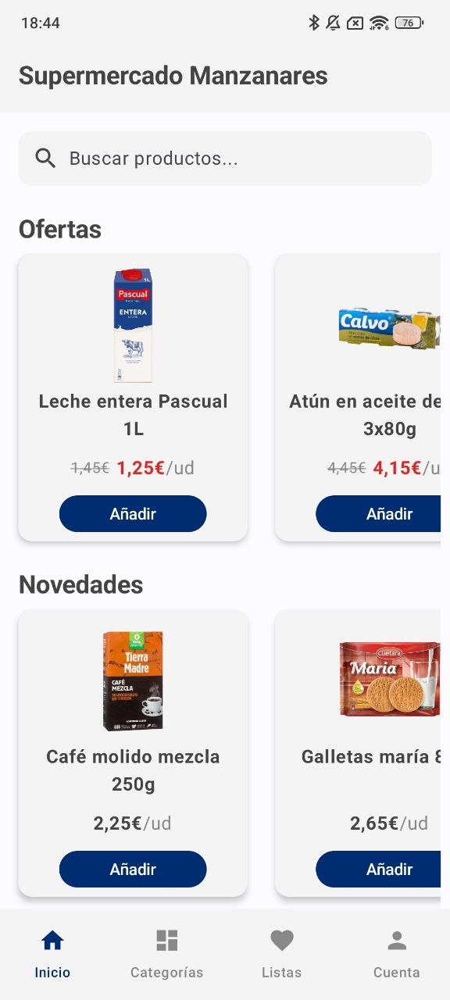
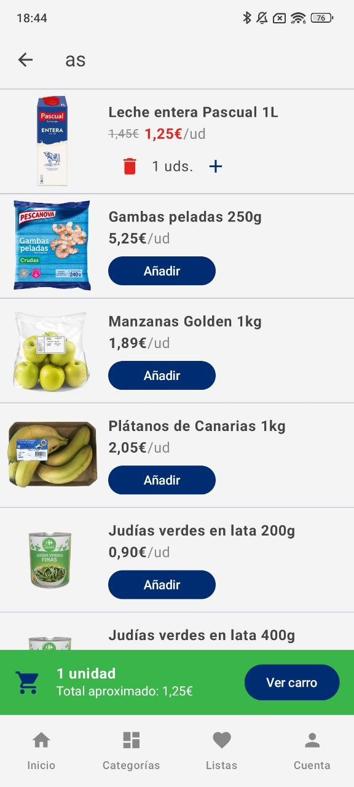
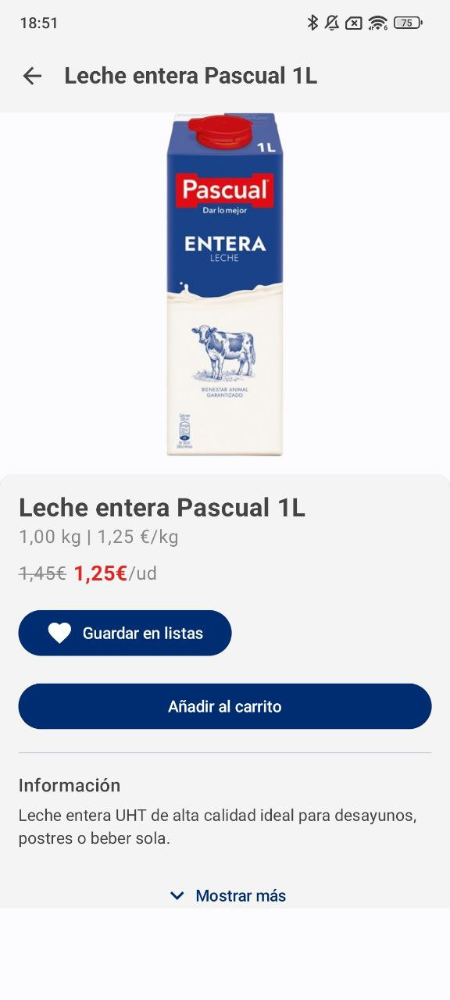
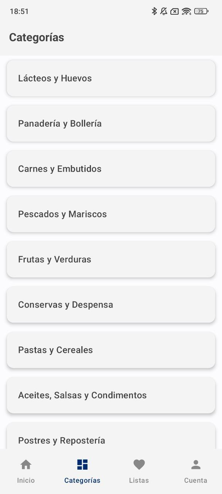
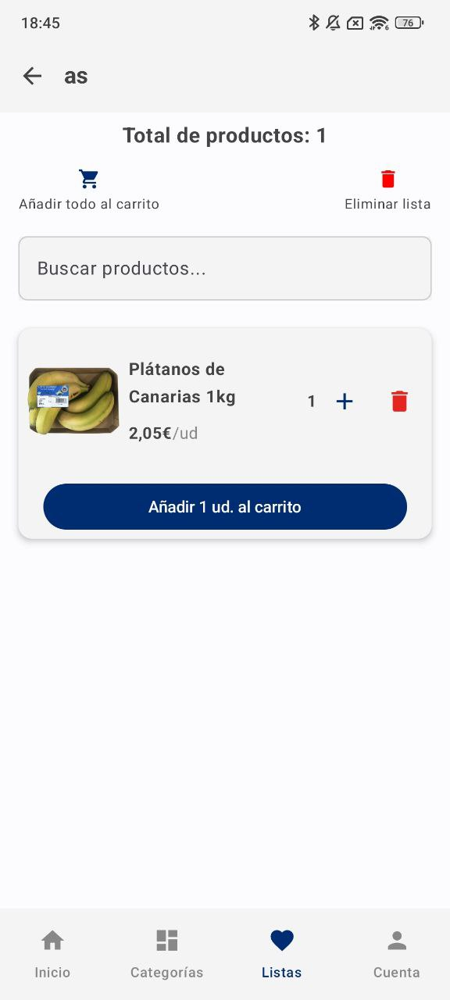
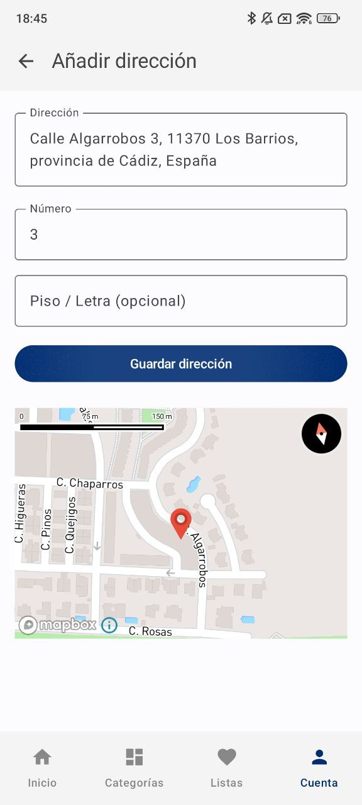
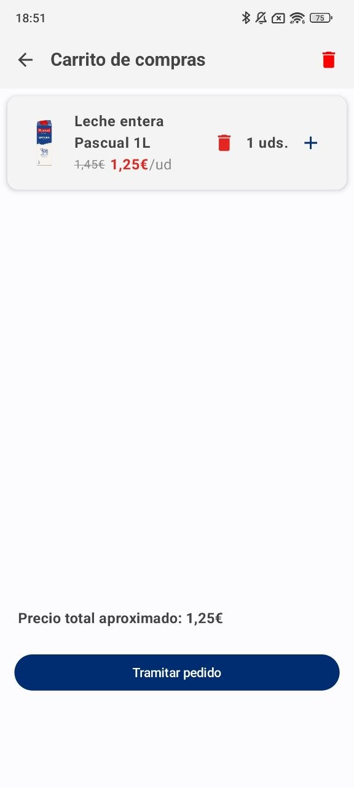

SuperManzanares
SuperManzanares es una aplicación Android de supermercado desarrollada como Trabajo de Fin de Grado, construida íntegramente con Kotlin y Jetpack Compose. Permite explorar el catálogo de productos, crear listas de compra personalizadas, gestionar un carrito y completar pedidos con selección de dirección en mapa interactivo.
El proyecto implementa una arquitectura MVVM con Hilt, estrategia offline-first con Room y Firestore, autenticación dual con Google Sign-In y email/contraseña, e integración con Mapbox para la selección del domicilio de entrega. Toda la navegación, el estado y la lógica de negocio están desacoplados de la UI, siguiendo las guías de arquitectura recomendadas por Google.
Funcionalidades clave
- Pantalla principal: Explora productos destacados.
- Buscador: Filtrado por nombre o categoría.
- Listas de compra: Crea, edita y añade al carrito.
- Carrito inteligente: Solo aparece si hay productos.
- Confirmación de pedido: Con resumen y mapa de dirección.
- Perfil: Ver historial, modificar datos o cerrar sesión.
- Dirección con Mapbox: Mapa interactivo para seleccionar domicilio.
- Login con Google o manual: Incluye validación y recuperación de contraseña.
Tecnologías usadas
Lenguaje: Kotlin
Framework: Jetpack Compose
Base de datos local: Room
Backend y auth: Firebase (Firestore + Auth)
Mapas: Mapbox SDK
Otros: State hoisting, navegación compuesta, viewModels, flows, etc.
Galería de pantallas







Decisiones técnicas
Arquitectura MVVM + Hilt: Cada pantalla tiene su propio ViewModel inyectado con Hilt que expone el estado mediante StateFlow. La UI solo observa y reacciona — nunca llama directamente al repositorio ni a Firestore, lo que facilita el testing y evita fugas de contexto al rotar el dispositivo.
Room como fuente de verdad (offline-first): Los productos, listas y pedidos se almacenan primero en Room y la UI siempre lee de ahí. Firestore actúa como capa de sincronización en segundo plano — si no hay conexión, la app sigue funcionando con los datos locales sin mostrar errores al usuario.
Carrito como estado efímero en ViewModel: El carrito no se persiste en base de datos — vive en memoria en el ViewModel como un StateFlow de mapa producto→cantidad. Esto evita escrituras innecesarias en Room para datos que solo existen durante la sesión de compra y simplifica el vaciado al confirmar el pedido.
Login dual con Firebase Auth: Se implementaron dos flujos de autenticación independientes — Google Sign-In mediante ActivityResultContracts y email/contraseña manual — con validación de campos en el ViewModel antes de llamar a Auth, evitando peticiones innecesarias a Firebase con datos incorrectos.
Mapbox para selección de dirección: Se integró el SDK de Mapbox en lugar de Google Maps para el selector de domicilio, con un mapa interactivo que devuelve las coordenadas al ViewModel mediante callback. La dirección seleccionada se muestra también en la pantalla de confirmación de pedido.
Animaciones con APIs nativas de Compose: Las transiciones entre pantallas y la aparición del
carrito se implementaron con animateDpAsState y AnimatedContent de Jetpack Compose,
sin librerías externas. El carrito solo se renderiza en el árbol de composición cuando tiene productos, evitando
recomposiciones innecesarias.
Navegación con argumentos tipados: El grafo de navegación usa NavHost con rutas nombradas y paso de argumentos serializados entre pantallas, evitando el uso de bundles manuales y centralizando toda la lógica de navegación en un único fichero de rutas.